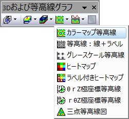
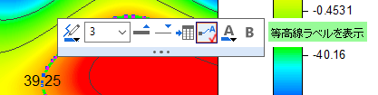

カラーマップ等高線図
ColorFill-Contour-Graph

必要なデータ
- 少なくとも1つのZ列（あるいは、その部分領域）を選択します。Z列と関連するXY列がある場合、そのXY列が使われます。そうでない場合、ワークシートのデフォルトのXY値が使われます。
- または、
または、
- 行列：1つの行列シートオブジェクトが複数含まれるシートもサポートされています。
または、
- イメージ：1つのイメージウィンドウフレームが複数含まれるイメージもサポートされています。すべてのフレームをめくる方法については、以下のこのページを参照してください。
グラフ作成
必要なデータを選択します。
メニューから「」を選択します。
または、
3Dグラフギャラリーツールバーの、 カラーマップ等高線 ボタン をクリックします。

カラーマップ等高線図の作成と編集に関する詳細は、3Dおよび等高線グラフの項目を参照してください。
テンプレート
ワークシート
行列/イメージ
(Originのプログラムフォルダにインストールされています。)
Notes
- Z値の範囲は、カラーマップの等高線と塗りつぶし色を使用して XYグリッド上に表示されます。
- ワークシートからの等高線図はユーザ定義の境界をサポートします。等高線の境界をセットするには、作図の詳細ダイアログボックスを開き、等高線設定タブを使用します。
- 等高線を選択して右クリックし、 等高線データの抽出 を選択して、等高線のデータを出力することが出来ます。詳細はこの表をご確認ください。
- 等高線を2回クリック (ダブルクリックではない) し、単一のレベル編集用のミニツールバーが表示されします。

- 等高線図が行列から作成される場合、レイヤサイズはXmax-XminとYmax-Yminの比率の関数であり、レイヤの軸の長さをスケールにリンクするオプションはデフォルトで1に設定されています。